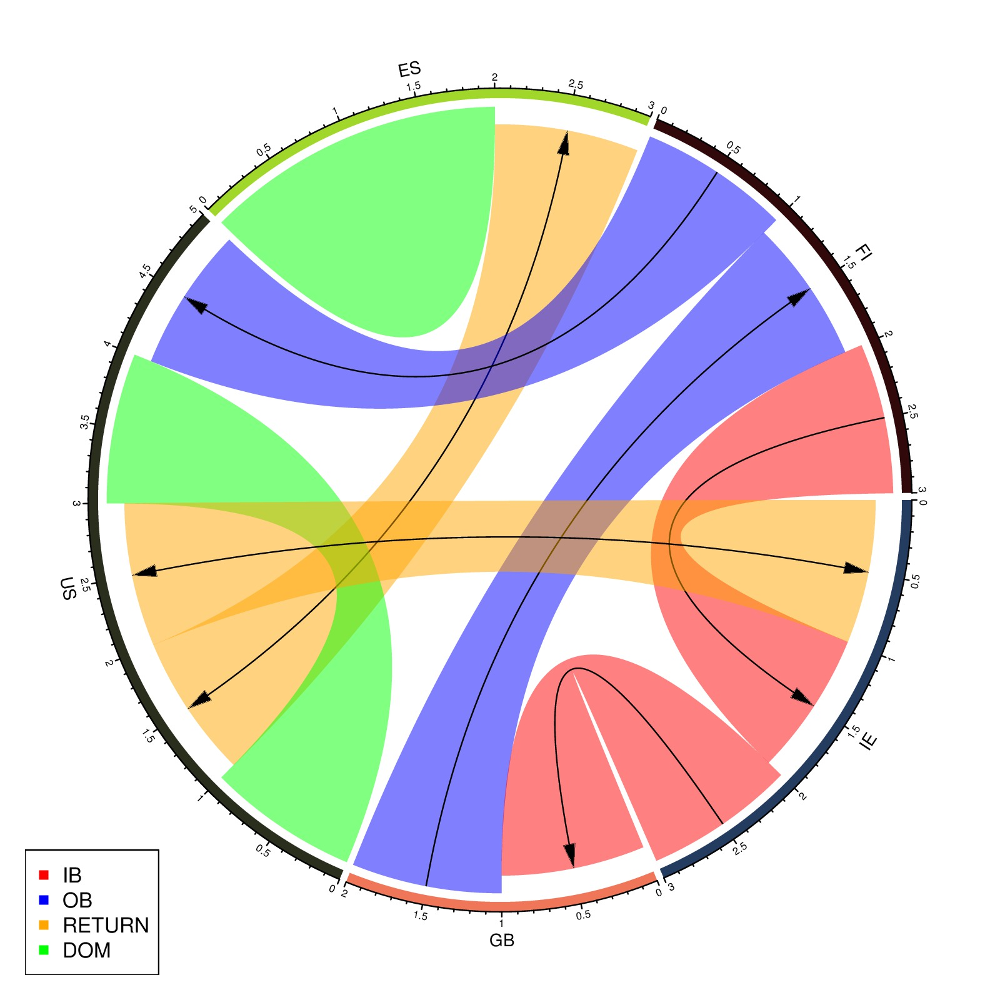

original posted at stackoverflow
library(circlize)
orig = c("IE","GB","US","ES","FI","US","IE","GB")
dest = c("FI","FI","ES","ES","US","US","US","IE")
direc = c("IB","OB","RETURN","DOM","OB","DOM","RETURN","IB")
df = data.frame(orig, dest, direc, stringsAsFactors = FALSE)
col = c("IB" = "red",
"OB" = "blue",
"RETURN" = "orange",
"DOM" = "green")
directional = c("IB" = -1,
"OB" = 1,
"RETURN" = 2,
"DOM" = 0)
diffHeight = c("IB" = -0.04,
"OB" = 0.04,
"RETURN" = 0,
"DOM" = 0)
chordDiagram(df[1:2], col = col[df[[3]]],
directional = directional[df[[3]]],
direction.type = c("arrows+diffHeight"),
diffHeight = diffHeight[df[[3]]])
legend("bottomleft", pch = 15, legend = names(col), col = col)